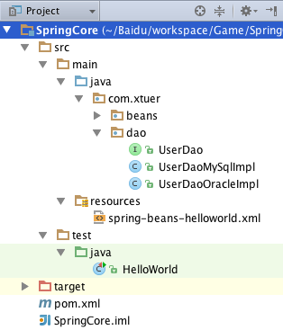

项目的结构图

spring-beans.xml
叫做 Bean configuration file，定义 bean 的属性和其他 bean 之间的依赖，Spring 根据 bean 的定义生成 bean。
1
2
3
4
5
6
7
8
9
| <?xml version="1.0" encoding="UTF-8"?>
<beans xmlns="http://www.springframework.org/schema/beans"
xmlns:xsi="http://www.w3.org/2001/XMLSchema-instance"
xsi:schemaLocation="
http://www.springframework.org/schema/beans
http://www.springframework.org/schema/beans/spring-beans.xsd">
<bean id="userDao" class="com.xtuer.dao.UserDaoMySqlImpl"/>
</beans>
|
UserDao
1
2
3
4
5
| package com.xtuer.dao;
public interface UserDao {
public void deleteUser(int id);
}
|
UserDaoMySqlImpl
1
2
3
4
5
6
7
8
| package com.xtuer.dao;
public class UserDaoMySqlImpl implements UserDao {
@Override
public void deleteUser(int id) {
System.out.println("UserDaoMySqlImpl.deleteUser()");
}
}
|
UserDaoOracleImpl
1
2
3
4
5
6
7
8
| package com.xtuer.dao;
public class UserDaoOracleImpl implements UserDao {
@Override
public void deleteUser(int id) {
System.out.println("UserDaoOracleImpl.deleteUser()");
}
}
|
HelloWorld
1
2
3
4
5
6
7
8
9
10
11
12
13
14
15
16
| import com.xtuer.dao.UserDao;
import org.junit.Test;
import org.springframework.context.ApplicationContext;
import org.springframework.context.support.ClassPathXmlApplicationContext;
public class HelloWorld {
@Test
public void test() {
ApplicationContext context = new ClassPathXmlApplicationContext("spring-beans.xml");
UserDao userDao = context.getBean("userDao", UserDao.class);
userDao.deleteUser(0);
}
}
|
输出
1
| UserDaoMySqlImpl.deleteUser()
|
更换 UserDao 的实现
<bean id="userDao" class="com.xtuer.dao.UserDaoMySqlImpl"/> 修改为
<bean id="userDao" class="com.xtuer.dao.UserDaoOracleImpl"/>，输出
1
| UserDaoOracleImpl.deleteUser()
|
把 UserDao 的实现从 UserDaoMySqlImpl 修改为 UserDaoOracleImpl，只需要修改 XML 配置文件，不需要修改代码。
Spring IoC + 接口 ==> 容易实现非侵入式的开发，扩展已有代码。